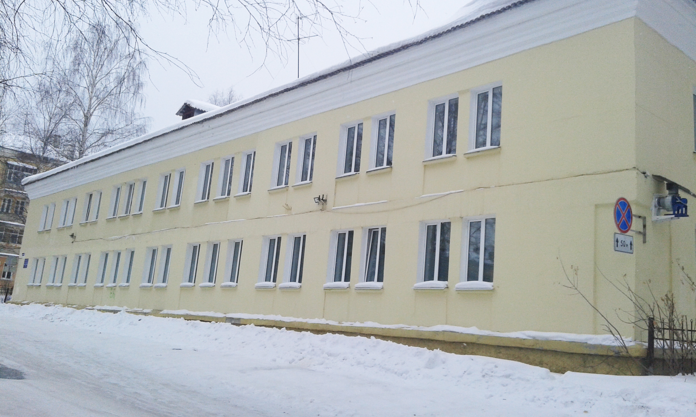

Детский подросковый центр
Детские клубы появились в 60 – е годы, их деятельность во многом перекликалась с работой октябрьской, пионерской, комсомольской организаций
В ноябре 1994 года произошла реорганизация – объединение детских клубов по месту жительства в муниципальное образовательное учреждение
«Детский (подростковый) центр».
В этом же году Детский подростковый центр возглавляет Мария Петровна Барышева.
Создание трудовых подростковых отрядов, организация и проведение летних и зимних спартакиад по футболу, хоккею, настольному теннису, игровых праздничных программ и просто ежевечернего досуга детей в помещениях клубов – все это задачи педагогического сообщества Детского подросткового центра.
По мере становления воспитательно - образовательной системы и структуры учреждения, "ДПЦ" стал выполнять и более сложные задачи: дополнительное образование учащихся по нескольким направлениям,профориентацию и начальное профессиональное образование для наиболее одаренных учащихся, социально- педагогическую помощь и поддержку учащимся и родителям, консультативно- методическую помощь социальным партнерам.
Сегодня клубы – это уютные, хорошо обставленные помещения, обеспеченные аудио-, видеоаппаратурой, современным спортинвентарем. В учреждении работает более 30 специалистов: педагоги-организаторы, педагоги дополнительного образования, инструктор по физической культуре, социальный педагог, медицинский работник.
Деятельность объединения центра охватывает 4 направленности:
- социально – педагогическая,
- физкультурно – спортивная,
- художественно – эстетическая,
- военно – патриотическая.
Каждый клуб разрабатывает свою программу развития.